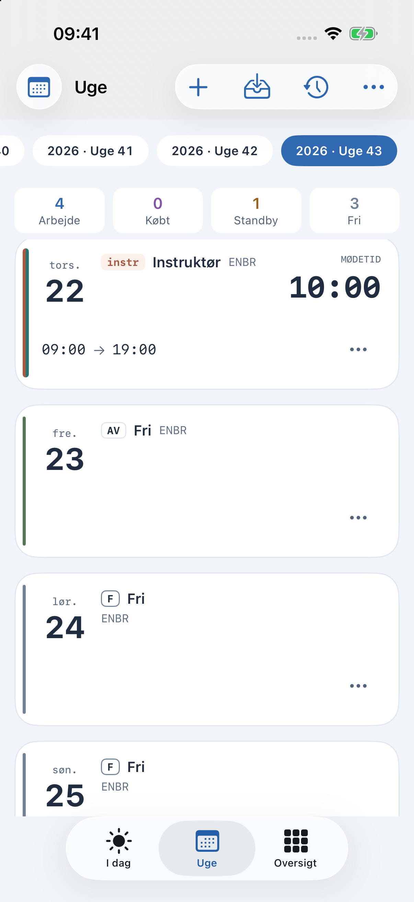
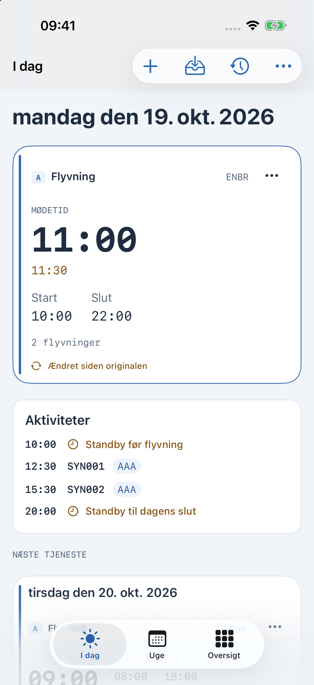
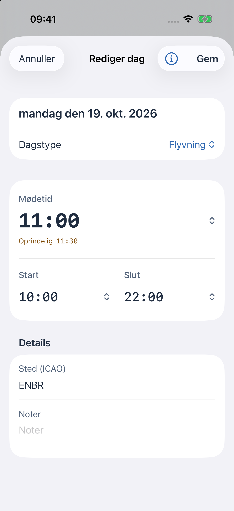

Aktuel betaversion · iPhone, iPad og Apple Watch
CrewSchedule
Din vagtplan.
Tydeligt.
Dine vagttider, dag for dag. Se, hvad der kommer, og hvad der er ændret.
Skærmbillederne viser en fiktiv eksempelvagtplan.


Vagtplanen med sin historik
Se hvad
der har ændret sig.
Meldetiden blev flyttet fra 11:30 til 11:00. Det oprindelige tidspunkt vises fortsat ved siden af det nye.
Indstil automatisk import
iPhone. iPad. Apple Watch.
Din vagtplan,
der hvor du har brug for den.
Behold det personligt. Importér og brug din vagtplan på denne enhed. iCloud-synkronisering er valgfri.
Vælg din Kalender. Tilslut kalendere, hvis du vil have vagtplanændringer vist dér.
Tag den med til Watch. Et parret Apple Watch kan have sin egen kopi af vagtplanen og vise den næste vagt.
En hjælper til planlægning af vagtplanen. Følg arbejdsgiverens aktuelle driftsinstruktioner.
CrewSchedule · Aktuel betaversion
En tydeligere måde
at holde styr på din vagtplan.
Spørg om at deltage i betaversionen, eller send et spørgsmål om appen.
Spørg om betaversionen